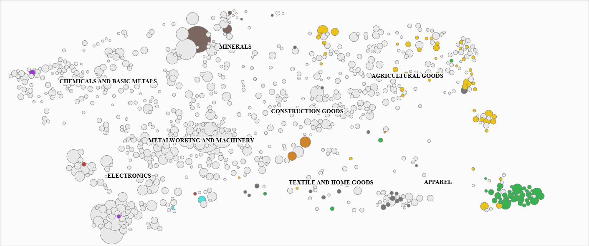
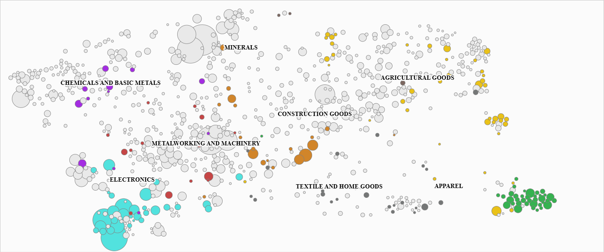

MPA DATA SCIENCE FOR PUBLIC POLICY
The Empirical Puzzle:
Despite substantial natural wealth, resource-rich countries often remain locked into low-complexity production structures, underperforming economies with far fewer endowments.
The literature finds weak evidence for the resource curse as a deterministic mechanism. The central question has shifted to identifying the conditions that mediate the relationship between resource wealth and growth.
Resources impede growth only where institutions are "grabber-friendly". Where rule of law is strong, resources accelerate growth.
Resource-rich governments have generally converted extraction rents into consumption rather than productive investment in human capital, infrastructure, or financial assets. Adjusted net savings are strongly negative.
Resource abundance boosts growth directly but undermines it through macroeconomic volatility, shifting investment toward short-term, low-return projects.
Point-source resources (oil, diamonds) concentrate rents among elites. Diffuse resources (agriculture, forestry) spread benefits more broadly.
The project combines two quantitative strategies with three qualitative case studies
Panel OLS models that test Venables' (2016) investment theory empirically, using an interaction strategy inspired by Mehlum et al. (2006).
Unsupervised techniques (PCA and K-Means clustering) group countries by resource extraction profile. Supervised models (LASSO, Ridge, Elastic Net, and Random Forest) then take a theory-agnostic approach to identify important predictors.
The three country case studies of the Republic of Congo, Azerbaijan, and Chile build on the empirical findings, identify country-specific challenges, and present policy recommendations.
Our quantitative analysis shows three structural variables consistently predict sustained diversification and the development of value-added industries.
Domestic Credit to Private Sector
Where firms cannot borrow, resource rents stay in the extractive sector rather than financing new industries
Access to Electricity
Manufacturing requires reliable electricity. Countries with low electrification cannot sustain industrial production outside extraction.
Education & Skills Index
Without educated workers, countries remain locked into the lowest segments of the value chain
The ECI is a measure developed by the Harvard Growth Lab to capture the degree of "know-how" accumulated by a country. It helps track the transition from low complexity activities (e.g., subsistence farming, oil extraction) towards high complexity activities (electronics, machinery, and chemicals).
How it works: It uses trade data to calculate two quantities:


A panel of 54 resource-rich developing economies over 1995 to 2019, covering 48 variables across nine thematic groups (see Annex 1). Thirteen countries were excluded for insufficient coverage (Annex 2). Missing values were filled by linear interpolation (capped at three years) and K-Nearest Neighbours imputation.
Key patterns: Resource-rich countries show lower mean ECI than the full sample. The strongest positive correlations with ECI are domestic credit, the human capital index, and life expectancy; the strongest negative are political corruption and agricultural share of GDP.
We used PCA to compress 21 resource production variables into two dimensions, then K-means clustering (K=5) to group countries by extraction profile. This allows comparison against structural peers.
where \(\mathbf{X}_{it}\) = Political Stability, Rule of Law, Trade Openness
Human Capital (HCI) is positive and significant across all specifications, indicating that HCI contributes to complexity growth beyond a country's existing trajectory.
Gross Fixed Capital Formation is positive and significant.
Production Value is negative but not significant, consistent with the conditional curse view.
Institutional controls lose significance once lagged ECI is included.
None of the four interaction terms are significant, however 3 out of 4 carry a positive sign.
The association between human capital and complexity is stronger in countries with more intensive resource production, consistent with Venables (2016): returns are greatest where the gap between current and optimal capital stocks is widest.
Econometric models select variables guided by theory. This ensures interpretability but risks omitting predictors that matter empirically.
With 48 available variables across nine thematic groups, a theory-driven specification can only test a small subset. Thus, important factors may be missed simply because they fall outside the theoretical framework.
Machine Learning: all available variables are fed into the models. The ML algorithms themselves identify which predictors carry the most explanatory power.
Regularization techniques (LASSO, Ridge and Elastic Net): they penalise weak coefficients, shrinking them towards zero.
Random Forest: also calculates feature importance, but by capturing non-linear relationships between predictors and ECI.
Robustness check: Where ML and econometrics converge on the same predictors, confidence in those variables is strengthened. Where they diverge, ML highlights factors the theory-driven model may have overlooked.
Convergence across methods: Human Capital and HCI x Production rank as top predictors in both approaches.
Divergence across methods: Domestic credit and Electricity Access are the strongest predictors of ECI, factors absent in the theory-driven model.
Based on current predictor levels, we project which countries are positioned for ECI gains and losses.
Chile: Strong macro stability and institutions. Leverage green energy abundance for green industrialisation.
Mongolia: Heavy investment in education and financial infrastructure alongside mining-linked industrialisation.
Equatorial Guinea: Very low complexity base, with plans for forestry processing likely to bring ECI gains.
Malasya: Fitch downgrade from A− to BBB+ reflects lower institutional quality and political tensions.
Saudi Arabia: Disappointing results from large projects like NEOM, while private credit remains heavily concentrated in real estate rather than productive sectors.
Kazakhstan: Persistent petroleum dependence has worsened, and lagging human capital continues to erode possible complexity gains.
Each case study shows a different bottleneck. The binding constraint shifts as countries grow richer.
| Metric | Republic of Congo | Azerbaijan | Chile |
|---|---|---|---|
| Resource | Oil (80% exports) | Oil & Gas (90% exports) | Copper & Lithium (57% exports) |
| ECI Rank | 124th / 130 | 95th / 130 | 70th / 130 |
| Binding Constraint | All three pillars fail | Dutch Disease + governance | Human capital quality + R&D |
This report examines how natural resource dependence interacts with institutional, financial, and educational structures to determine economic diversification. No single policy lever is sufficient across all settings, as the relative importance of financial depth, infrastructure, and human capital shifts with institutional and macroeconomic conditions.
Domestic credit to the private sector emerged as the single strongest ML predictor. In Congo, only a minority of firms have access to financing. This increases barriers to firm formalisation. Expanding bank financing is a key precondition for oil revenues to reach the productive economy.
Electricity access is a consistent predictor of complexity across all ML models, but infrastructure spending only translates into diversification when governance channels it beyond the resource sector. Redirecting investment toward petrochemical processing and renewable energy engineering would target sectors adjacent to the existing export basket.
Positive and significant across all econometric specifications. Chile has the strongest institutions in Latin America, yet its ECI has declined since the mid-2000s. Directing lithium revenues toward technical training and applied research, following Norway's SINTEF model, would build the workforce needed for downstream processing.
Open to questions and comments.
The panel draws on six primary sources. The World Bank WDI supplies 26 variables covering resource rents, sectoral GDP composition, savings, infrastructure, financial depth, and demographics. The IMF WEO and Investment and Capital Stock datasets provide GDP per capita (PPP), fiscal balances, government revenue, and gross fixed capital formation. Governance indicators come from V-Dem; human capital and capital stock from the Penn World Table 11.0; and the landlocked indicator from CEPII GeoDist. Natural resource production quantities and reserves are compiled from the Energy Institute, Our World in Data, and USGS Data Series 140, converted to dollar values using a consolidated price file covering 19 minerals plus oil, coal, and natural gas. For the Chile case study, facility-level data from Sernageomin, COCHILCO, and customs records produce a directed network of approximately 460 facilities and 1,900 edges across 17 commodity groups.
Excluded countries: 13 countries were dropped from the sample due to insufficient data coverage, including North Korea, Cuba, South Sudan, Turkmenistan, Syria, and others with extensive missing economic or governance variables. The full list is in the report appendix (Table B.1).
Imputation: Missing values are filled in two passes. First, linear interpolation estimates gaps between observed values within each country's time series, capped at three years beyond the nearest observation. Second, remaining gaps (where a country has no observed value at all for a variable) are filled using K-Nearest Neighbours imputation (k=5, distance-weighted), which draws on the five most similar country-year observations. Median prediction error across all variables is 5.24%, though volatile series such as inflation (31.1%) and mineral rents (44.4%) carry higher uncertainty. Twenty-five of 54 countries have more than 10% of their data cells filled by KNN.
PCA is a dimensionality reduction technique that transforms a set of potentially correlated variables into a smaller set of uncorrelated variables called principal components (PCs). Each PC is a linear combination of the original variables, constructed to capture the maximum variance remaining in the data (Jolliffe, 2002).
The procedure follows four steps:
We apply PCA to 21 resource production variables. The first two components account for 69.5% of total variance: PC1 (51.8%) is driven by oil and natural gas; PC2 (17.7%) captures mining activity, particularly copper, gold, and coal. Most smaller minerals load weakly on both components.
K-means is an unsupervised algorithm that partitions n observations into k clusters by minimising within-cluster variance, defined as the sum of squared Euclidean distances between each observation and its cluster centroid (MacQueen, 1967).
The algorithm iterates three steps until convergence:
We apply K-means (k=5) to the first two principal components, using the 1995 cross-section of 54 countries. The silhouette score analysis restricts the optimal range to k=3 through k=6.